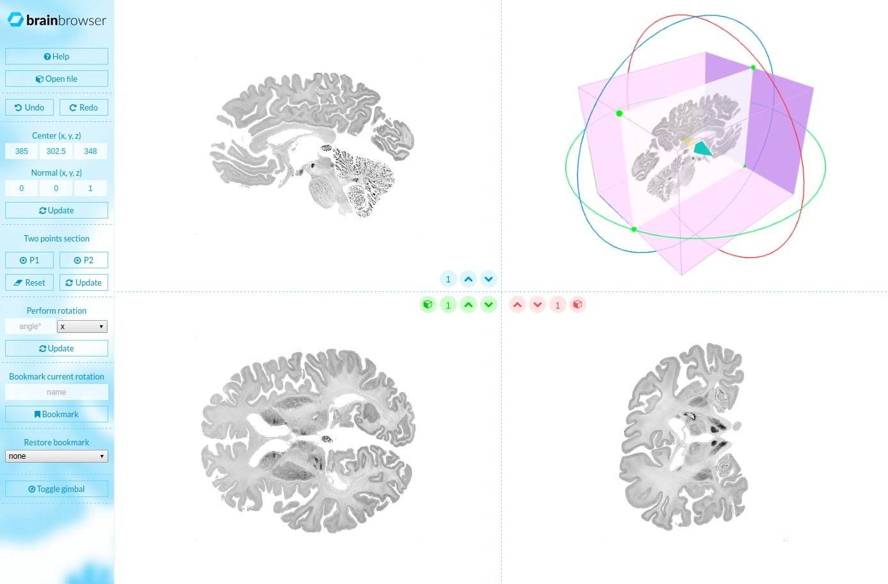
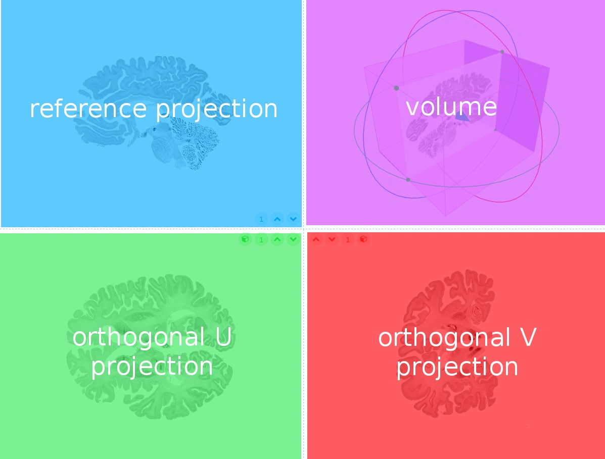
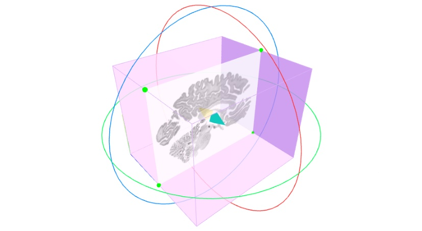
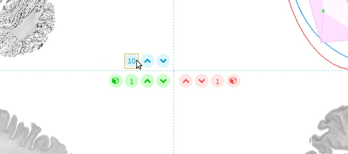

Navigator is a pure browser-side javascript app to explore Minc files and perform arbitrary projection (aka. oblique slices).
Compatible volume files
For the moment, BrainBrowser Navigator works only with Minc 2.0 files but NIfTi is on our roadmap.
User Interface Components
Here is how Navigor looks like when a volume file is loaded:  The windows is split in two parts: the controls on the left and the view on the right, such as:
The View Side
The view itself is composed of four parts:  The same color code is used all across Navigator: blue for the reference projection, green for the projection orthogonal in U (arbitrary) and red for the projection orthogonal in V.
The Gimbal
The gimbal, from the volume view, is the device used to navigate easily within the data.  If we have a look at the color code, we realize the reference projection is always coplanar to the blue circle.
Two kinds of controls are available: rotations and translation.
To perform a rotation, the user must grab one of the colord circle and drag it around.
To perform a translation, you must grab the blue/yellow arrow that lays in the middle of the volume and drag it forward/backward to move along the normal vector of the reference plane. To move the arrow within the reference plane, hold SHIFT + click to drag the arrow.
As long as the gimbal is move or rotated, the image projections are updating to the new position.
Orthogonal projections
The three projections are displayed in canvas, this allow some control like panning using a mouse drag, and zooming using the scroll wheel.
The top left projection is said reference because it is the one mapped on the volume.
View Quick Controls
To each projection is associated a micro toolbox:  The up and down arrow icon can be used to jump forward or backward in the volume. The size of the jump is the number from the text field (editable). Keep in mind the jump is performed along the normal vector of the plane, possibly in an oblique direction.
The two lower projections (othogonal U, in green and V, in red) have an option to make them the reference projection. Click on the cube icon and the two concerned projections, as well as the volume, will be updated accordingly.
The Control Side
Undo & Redo
Needless to precise what this feature is about, still, keep in mind only the position and rotation of the gimbal history is taken in consideration.
Center & Normal
Both are 3D coordinater (x, y, z).
Center is the center of the gimbal, where lies the blue/yellow arrow. The position has to be within the boundaries of the volume.
Normal is the normal vector of the reference plane, in other words, the direction of the blue arrow that lays at the center of the blue circle of the gimbal. This vector is supposed to be normalized but if you set a vector with a norm greater than 1, the normalization process will be done internally.
Two Points Section
A two point section allows to move along a segment defined by two points. The reference projection will be orthogonal to this segment and the blue arrow will be along this segment.
To place the the first point (P1), move the gimbal (by dragging or using the center from the above section), and click on P1. Repeat the procedure for P2 and click on update
Basic controls
Once some shapes are loaded from a file, you can hold the left click and drag to rotate the whole. To translate the camera, hold the right click and drag.
Keyboard shortcuts
Picking a shape to show its position from within the list. Target a shape and shift + left click.
BrainBrowser Navigator is part of the BrainBrowser Project, developed by the McGill Center for Integrative Neuroscience (MCIN) under the MIT License.
Development team:
The core of Navigator is mainly composed of two modules: Volume Navigator and Minc ReaderJS. Even though those modules where designed with BrainBrowser Navigator in mind, they can be used independently to serve other purposes.